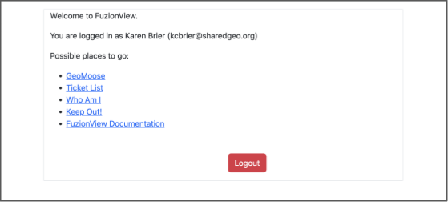
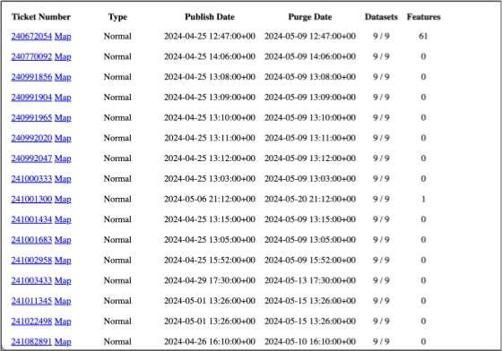

Getting Started
FuzionView is currently in Beta testing. Use the link provided by your Operator to access the most recent version.
- Once you are logged in, you will see the available features:
Ticket Map - a map view of all authorized tickets
Ticket List - a list view of all authorized tickets

FuzionView Landing Page
Ticket Map
Use the Ticket Map option to view all tickets on a map.

See a map of all tickets for your organization
Ticket List
Use the Ticket List option to view all tickets in a list.

See a list of all tickets for your organization
From either the List or Map view, select the Ticket Number to open a report view of the ticket.
Ticket Report
The Report View of the ticket has a composite map of all features and a map of each individual feature within the ticket boundary.

Map report on the identified features
Ticket Viewer
From either the List view, select the Map option to open the selected ticket in the FuzionView Ticket Viewer application.

Map view of the identified features
Check out the documentation on the FuzionView Ticket Viewer here